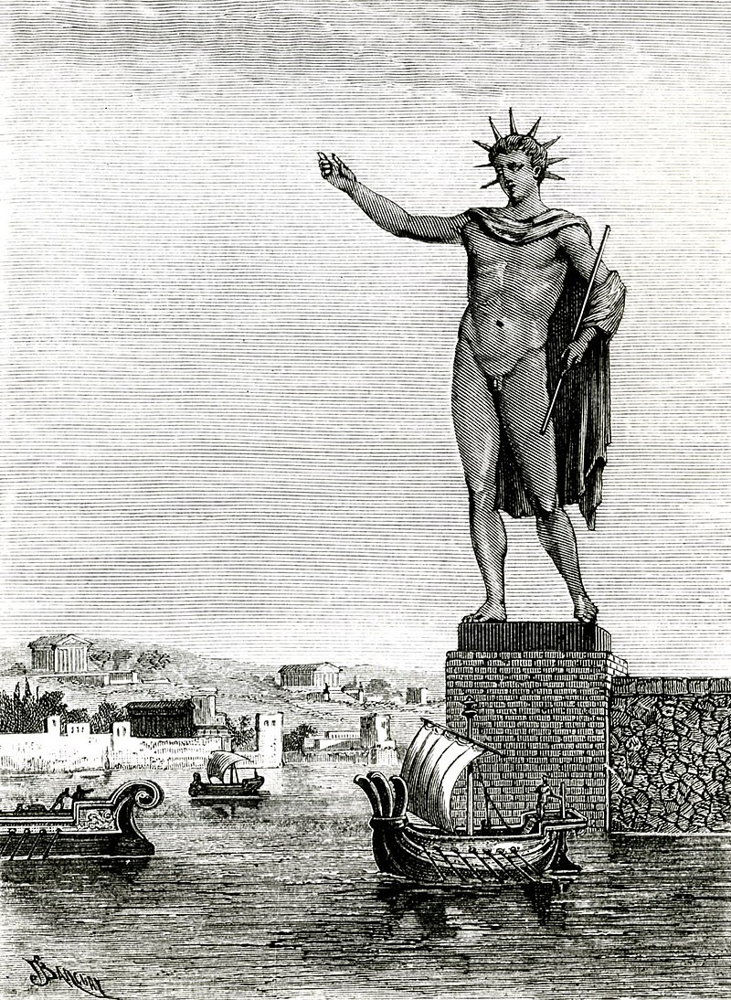
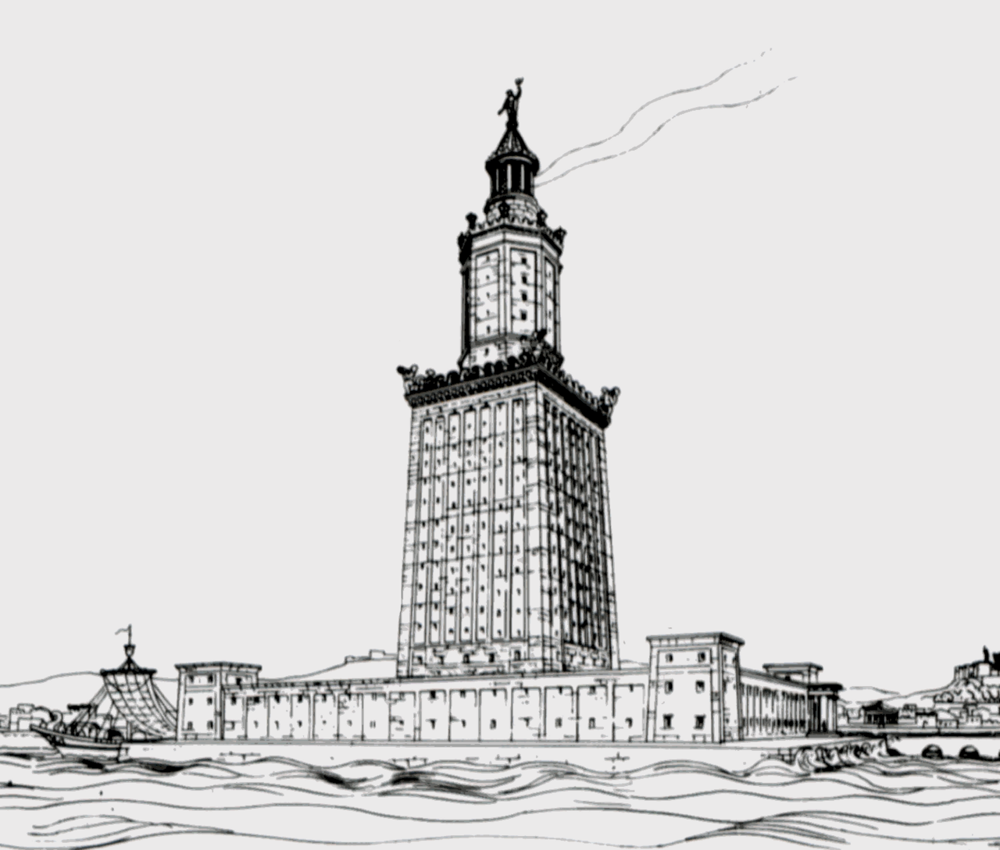

Marea Piramidă din Giza

Introducere
Marea Piramidă din Giza este una dintre cele mai impresionante structuri antice, construită în jurul anului 2560 î.Hr.
Grădinile Suspendate din Babilon

Introducere
Grădinile Suspendate din Babilon erau renumite pentru frumusețea și complexitatea lor, construite în jurul anului 600 î.Hr.
Statuia lui Zeus din Olympia

Introducere
Statuia lui Zeus din Olympia era o sculptură monumentală realizată în jurul anului 435 î.Hr.
Templul Artemis din Efes

Introducere
Templul Artemis din Efes a fost un templu magnific construit în jurul anului 550 î.Hr.
Mausoleul din Halicarnassus

Introducere
Mausoleul din Halicarnassus a fost construit în jurul anului 350 î.Hr. ca mormânt pentru Mausolus.
Colosul din Rodos
Introducere
Colosul din Rodos a fost o statuie uriașă a zeului Helios, ridicată în jurul anului 280 î.Hr.
Farul din Alexandria
Introducere
Farul din Alexandria, cunoscut și sub numele de Farul din Pharos, a fost construit în jurul anului 280 î.Hr.
Lista Ordonată cu Cele 7 Minuni ale Lumii
- Marea Piramidă din Giza
- Grădinile Suspendate din Babilon
- Statuia lui Zeus din Olympia
- Templul Artemis din Efes
- Mausoleul din Halicarnassus
- Colosul din Rodos
- Farul din Alexandria
Caracteristici Comune (A9, A10)
- Arhitectură impresionantă
- Importanță istorică
- Patrimoniu mondial UNESCO
Informații despre Cele 7 Minuni ale Lumii
| Minunea | Anul Construirii | Locație |
|---|---|---|
| Marea Piramidă din Giza | 2560 î.Hr. | Egipt |
| Grădinile Suspendate din Babilon | 600 î.Hr. | Iraq |
| Statuia lui Zeus din Olympia | 435 î.Hr. | Grecia |
| Templul Artemis din Efes | 550 î.Hr. | Turcia |
| Mausoleul din Halicarnassus | 350 î.Hr. | Turcia |
| Colosul din Rodos | 280 î.Hr. | Grecia |
| Farul din Alexandria | 280 î.Hr. | Egipt |